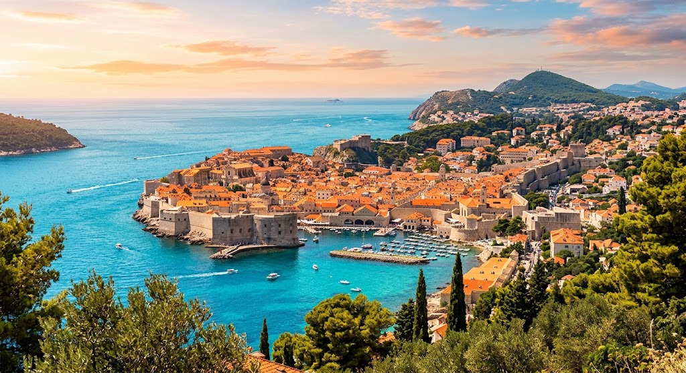
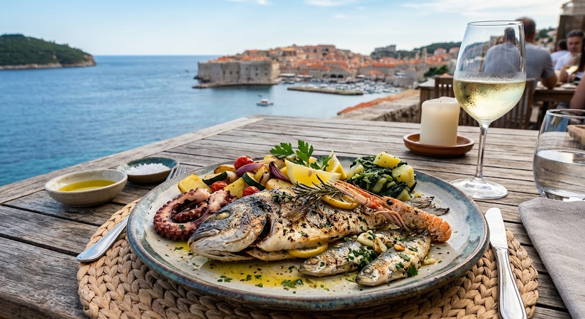
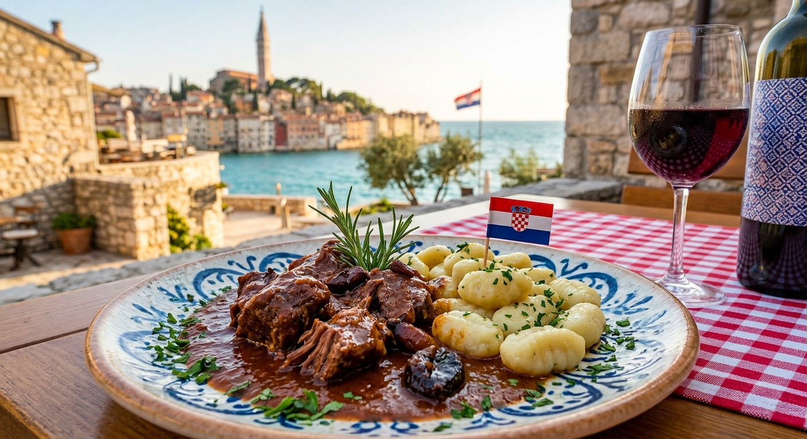
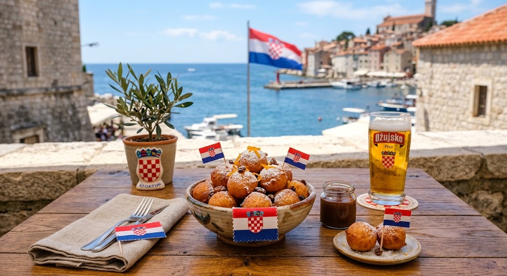
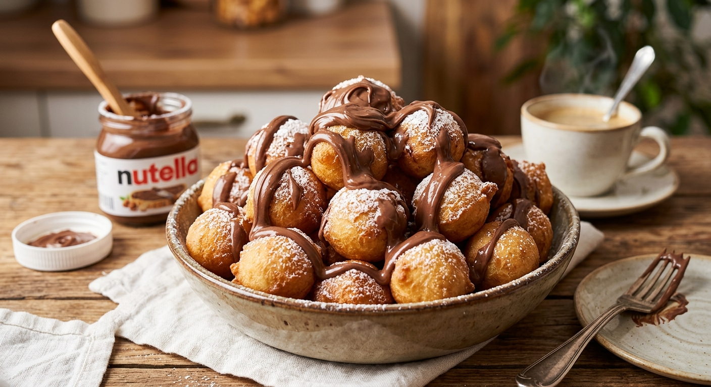
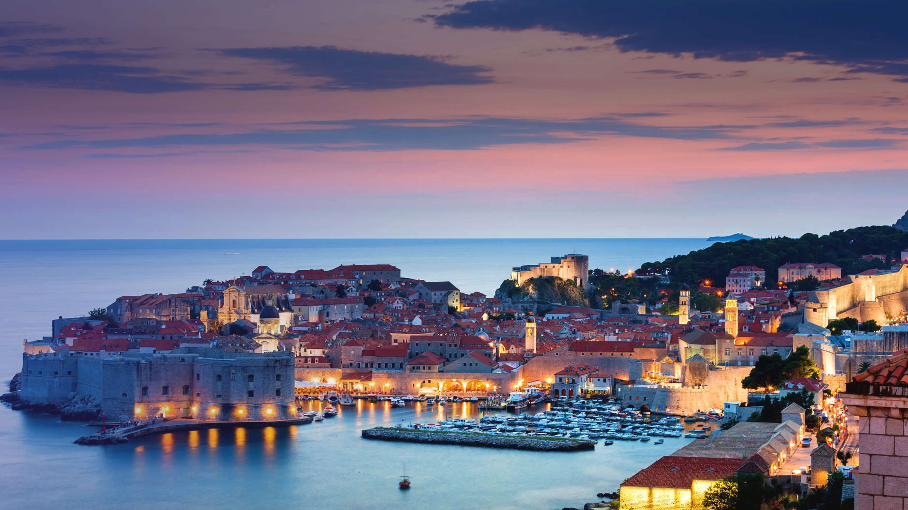

SABORES
DA
CROÁCIA
Conheça a cultura, a história e os sabores de um dos países mais encantadores da Europa.
CONHEÇA O FRITULE
A Croácia é um país localizado no sudeste da Europa, às margens do Mar Adriático. O país é conhecido por suas belas praias, cidades históricas, ilhas e paisagens naturais.
Sua capital é Zagreb, enquanto cidades como Dubrovnik, Split e Zadar são importantes destinos turísticos. A Croácia também possui milhares de ilhas ao longo de sua costa.
A cultura croata recebeu influências de diferentes povos europeus ao longo dos séculos. Essas influências também aparecem na arquitetura, nas festas tradicionais e principalmente na gastronomia.
Assista a um vídeo e descubra alguns dos pratos e sabores tradicionais da culinária croata.
A gastronomia croata é bastante diversificada e muda de acordo com a região do país. Na costa do Adriático, peixes, frutos do mar, azeite e ervas são muito presentes. Já no interior, são comuns carnes, massas, sopas e pratos mais encorpados.

Peixes frescos preparados de maneiras tradicionais, acompanhados frequentemente de azeite, ervas e ingredientes locais.

Um prato tradicional da região da Dalmácia, preparado com carne bovina cozida lentamente em um molho rico e aromático.

Pequenos bolinhos fritos tradicionais da Croácia, muito populares durante festas e celebrações.

As Fritule são pequenos bolinhos fritos tradicionais da culinária croata. Elas são especialmente populares durante o período de Natal e em festas tradicionais.
Apesar de pequenas, as Fritule possuem um sabor marcante. A massa normalmente leva farinha, ovos, açúcar e outros ingredientes que podem variar de acordo com a receita.
Dependendo da região e da família que prepara a receita, podem ser adicionados ingredientes como passas, raspas de frutas cítricas, uvas-passas, rum ou aguardente.
Depois de fritas, as Fritule costumam receber açúcar de confeiteiro. O resultado é um bolinho pequeno, dourado e muito associado às celebrações e à cultura gastronômica croata.
As Fritule são especialmente tradicionais na região costeira da Croácia e fazem parte das celebrações de inverno e Natal.
A Croácia possui uma cultura rica, formada pela mistura de diferentes influências históricas. Suas cidades apresentam construções antigas, fortalezas, igrejas e ruas de pedra.
O país também é conhecido pelas tradições relacionadas ao mar, à música, às festas populares e à produção de alimentos regionais.
A gastronomia é uma das maneiras de conhecer essa diversidade, já que cada região possui ingredientes e receitas características.
